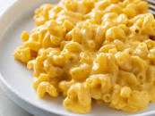

Mac and cheese

Description:
Quick, easy, and tasty macaroni and cheese dish.
Fancy, designer mac and cheese often costs forty or
fifty dollars to prepare when you have so many expensive
cheeses, but they aren't always the best tasting.
This simple recipe is cheap and tasty.
Ingredients:
- 1 (8 ounce) box elbow macaroni
- ¼ cup butter
- ¼ cup all-purpose flour
- ½ teaspoon salt
- ground black pepper to taste
- 2 cups milk
- 2 cups shredded Cheddar cheese
How to Make Mac and cheese Step-By-Step:
- Boil Macaroni for 8 mins
- Make a Roux, start by melting butter
in a saucepan over medium heat. Add flour,
salt, and pepper and stir until smooth.
Slowly pour in milk and stir until the
mixture is smooth and bubbling. Be careful
to not let the milk burn.
- Add cheese! Slowly stir in Cheddar cheese
until smooth and melted. We recommend you
grate your own cheese because pre-shredded
cheese won't incorporate into the mixture as
well as block cheese.
- Once the macaroni is finished cooking,
drain and stir into cheese sauce until coated.
Back to Home